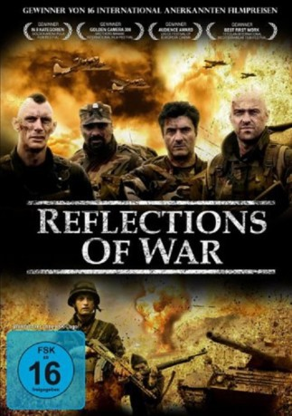

#7901 Die Lebenden und die Toten
Alternativ: Reflections of War
 
 IMDB-Wertung: 6.3 / 10
IMDB-Wertung: 6.3 / 10  Metascore: 0
Metascore: 0 
Diejenigen, die unfähig sind, aus ihrer eigenen Geschichte zu lernen, sind dazu verdammt, sie zu wiederholen! So geht es wohl auch den Soldaten und ihrem Anführer Ivo im ehemaligen Jugoslawien, wo sie 1993 auf genau den gleichen Pfaden marschieren, wie ihre Väter und Großväter einst im Zweiten Weltkrieg. Es ist das gleiche sinnlose Blutvergießen und ein hoffnungsloses Warten auf den Tod...
Jahr: 2007
Dauer: 91 Minuten
FSK:
Land: Kroatien Studio: Opening DistributionTonspuren: DTS - ,
Untertitel:
Auflösung: 1080p (1920x848) Größe: 5662 MB
Genre: Horror, Krieg, Fantasy
Regisseur: Kristijan Milic
Drehbuch: David O. Russell
Soundtrack:
Darsteller:
 Velibor Topic als Vijali
Velibor Topic als Vijali- Filip Sovagovic als Tomo / Martin
- Slaven Knezovic als Coro
- Marinko Prga als Mali
- Borko Peric als Robe
- Miro Barnjak als Ivo
- Bozidar Oreskovic als Zapovjednik
- Enes Vejzovic als Ferid / Vojnik ABIH u kolibi
- Izudin Bajrovic als Stojan
- Ljubomir Jurkovic als Semin
- Robert Roklicer als Satnik Dane Boro
- Zvonko Zecevic als Natporucnik Knez
- Dragan Suvak als Streljani Partizan
- Nino Soric als Pejo
- Nermin Omic als Masni / Domobran
- Zarko Luketina als Vojni policajac ABIH / Domobran
- Muhamed Aljovic als Partizan u zasjedi
- Veljko Segaric als Zbunjeni Domobran
- Adnas Murselagic als Harmonikas Redzo
- Igor Stikovic als Vozac Pinzgauera
- Branko Repalust als Vozac kamiona
- Marinko Vukovic als Domobran
- Ivo Zeko als Domobran
- Mario Zadravec als Vojni policajac ABIH na rampi
- Goran Gregorati als Vojnik ABIH, Ovo je Bosna
- Jozo Rajic als Partizan u sumi
- Jerko Vukadin als Partizan s bombom
- Muhamed Gazic als Vojnik ABIH, strazar pred kolibom
- Ljubo Herceg als Partizan
- Josip Alvir als Partizan - ubija Domobrana
- Zdravko Peric als Partizan, udara satnika
- Nedjeljko Brajkovic als Vojnik ABIH - ubija Malog
- Goran Alavadzic als Vojnik ABIH - pusac u sumi
- Hamid Abazovic als Vojnik ABIH - ubija Coru
- Armin Sulejmanagic als Vojnik ABIH - ranjava Vijalija
- Admir Hajric als Posljednji vojnik ABIH
- Zora Herceg als Starica na groblju
- Anka Lagetar als Starica na groblju
- Dalibor Juricevic als Silueta
- Goran Katic als Vojnik ABIH za mitraljezom
Datei: X:\2007(G-M)\Lebenden und die Toten, Die (2007, FSK, 1920x848).mkv seit 21.04.2016
Festplatte: HD 2007(A-Z)-2008(A-F)
 Es gibt insgesamt 64 Filme in der Gruppe '2007(G-M)'
Es gibt insgesamt 64 Filme in der Gruppe '2007(G-M)'